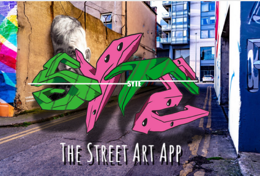
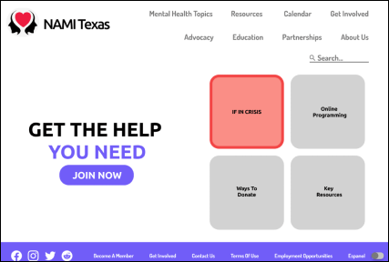
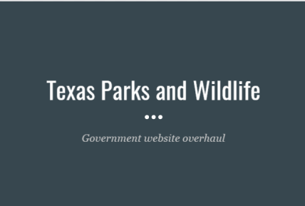

MITCH ERICKSON
About Me
My Projects
Inspirations
Contact
MITCH ERICKSON
Hello, I am
I am a UX/UI/Graphic designer.
I specialize in website/app design, and it fulfills me to make visually appealing, easy to use, and efficient products. Furthermore, I enjoy solving user issues that affect organization, visual appeal, and overly-complicated tasks. My skills are website wire framing, navigation efficiency, and logo design.
I love to hear everyone's perspectives, we’re all trapped in our own mind. To listen to and see how other people think, help me grow as a more well-rounded person and designer. Knowledge fuels creativity.
I am a UX/UI/Graphic designer.
I specialize in website/app design, and it fulfills me to make visually appealing, easy to use, and efficient products. Furthermore, I enjoy solving user issues that affect organization, visual appeal, and overly-complicated tasks. My skills are website wire framing, navigation efficiency, and logo design.
I love to hear everyone's perspectives, we’re all trapped in our own mind. To listen to and see how other people think, help me grow as a more well-rounded person and designer. Knowledge fuels creativity.
Skills
Organization is an integral part of the overall ease-of-use for the website. I use my common sense skills
along with user research and user testing to figure out the most obvious path for the consumer to find
what they need.
APP/WEBSITE DESIGN
I design based on; what the users want, what my employer wants, what the website/app represents, and most
importantly usability. I do this by using my communication skills to understand what all parties need to
be successful.
USER RESEARCH/TESTING
My approach to user research and testing involves in depth questions to understand how the ideal user
thinks, then get feedback for the designs I created to make the product better.
TOOLS I KNOW
InVision
Google Drive
Google Drive
Paper and Pencil
Adobe XD
Adobe XD
Photoshop
Adobe Illustrator
Adobe Illustrator
Figma
Adobe After Effects
Adobe After Effects
Google Surveys



My Work
SYTE The Street Art App
This was a group project to make an app from scratch. I had the idea to make an app that finds local
street art.
NAMI Texas Website Redesign
Our team had redone a nonprofit website for mobile and desktop. We went ultra simplistic and easy to
find all the support you need.
Government Website Overhaul
I chose a government website to redo. The original site was bland and unorganized. I completely redid
the website, making it easy to navigate and visually appealing.

Resume
Email Me
Linkedin